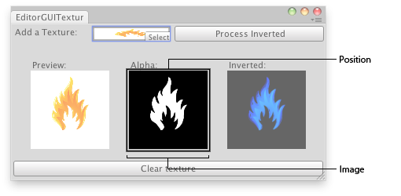

EditorGUI翻译：宗宗
- actionKey
- ColorField
- CurveField
- DrawPreviewTexture
- DrawTextureAlpha
- DropShadowLabel
- EnumPopup
- FloatField
- Foldout
- indentLevel
- InspectorTitlebar
- IntField
- IntPopup
- IntSlider
- LabelField
- LayerField
- MinMaxSlider
- ObjectField
- PasswordField
- Popup
- PrefixLabel
- ProgressBar
- PropertyField
- RectField
- Slider
- TagField
- TextArea
- TextField
- Toggle
- Vector2Field
- Vector3Field
- Vector4Field
EditorGUI.DrawTextureAlpha 绘制纹理通道
static function DrawTextureAlpha (position : Rect, image : Texture, scaleMode : ScaleMode = ScaleMode.StretchToFill, imageAspect : float = 0) : void
Parameters参数
- positionRectangle on the screen to draw the texture within.
屏幕上绘制纹理的矩形区域 - imageTexture to display. // 显示的纹理
-
scaleModeHow to scale the image when the aspect ratio of it doesn't fit the aspect ratio to be drawn within.
当纹理的尺寸不适合这个区域时如何缩放 -
imageAspectAspect ratio to use for the source image. If 0 (the default), the aspect ratio from the image is used.
用于源图片的纵横比。如果为0（默认），使用源图片的纵横比
Description描述
Draws the alpha channel of a texture within a rectangle.
在矩形内绘制一个纹理的透明通道。
参见：GUI.color, GUI.contentColor

Alpha texture in an Editor Window.
编辑器窗口中的通道Alpha纹理。
// Load a texture, display the texture, display its alpha channel and
// show a preview of the inverted texture
//加载并这个纹理，显示其Alpha通道，并显示该纹理的反向预览
class EditorGUITextures extends EditorWindow {
var texture : Texture2D;
var invertedTexture : Texture2D;
var showInverted = false;
@MenuItem("Examples/Texture Previewer")
static function Init() {
var window = GetWindow(EditorGUITextures);
window.position = Rect(0,0,400, 200);
window.Show();
}
function OnGUI() {
texture = EditorGUI.ObjectField(Rect(3,3,200,20),
"Add a Texture:",
texture,
Texture);
if(GUI.Button(Rect(208,3, position.width - 210, 20),"Process Inverted")) {
if(invertedTexture)
DestroyImmediate(invertedTexture);
//Copy the new texture
//复制新的纹理
invertedTexture = new Texture2D(texture.width,
texture.height,
texture.format,
(texture.mipmapCount != 0));
for (var m : int = 0; m < texture.mipmapCount; m++)
invertedTexture.SetPixels(texture.GetPixels(m), m);
InvertColors();
showInverted = true;
}
if(texture) {
EditorGUI.PrefixLabel(Rect(25,45,100,15),0,GUIContent("Preview:"));
EditorGUI.DrawPreviewTexture(Rect(25,60,100,100),texture);
EditorGUI.PrefixLabel(Rect(150,45,100,15),0,GUIContent("Alpha:"));
EditorGUI.DrawTextureAlpha(Rect(150,60,100,100),texture);
EditorGUI.PrefixLabel(Rect(275,45,100,15),0,GUIContent("Inverted:"));
if(showInverted)
EditorGUI.DrawPreviewTexture(Rect(275,60,100,100),invertedTexture);
if(GUI.Button(Rect(3,position.height - 25, position.width-6,20),"Clear texture")) {
texture = EditorGUIUtility.whiteTexture;
showInverted = false;
}
} else {
EditorGUI.PrefixLabel(
Rect(3,position.height - 25,position.width - 6, 20),
0,
GUIContent("No texture found"));
}
}
function InvertColors() {
for (var m : int = 0; m < invertedTexture.mipmapCount; m++) {
var c : Color[] = invertedTexture.GetPixels(m);
for (var i : int = 0 ;i < c.Length; i++) {
c[i].r = 1 - c[i].r;
c[i].g = 1 - c[i].g;
c[i].b = 1 - c[i].b;
}
invertedTexture.SetPixels(c, m);
}
invertedTexture.Apply();
}
function OnInspectorUpdate() {
Repaint();
}
}最后修改：2011年6月23日 Thursday 19:39